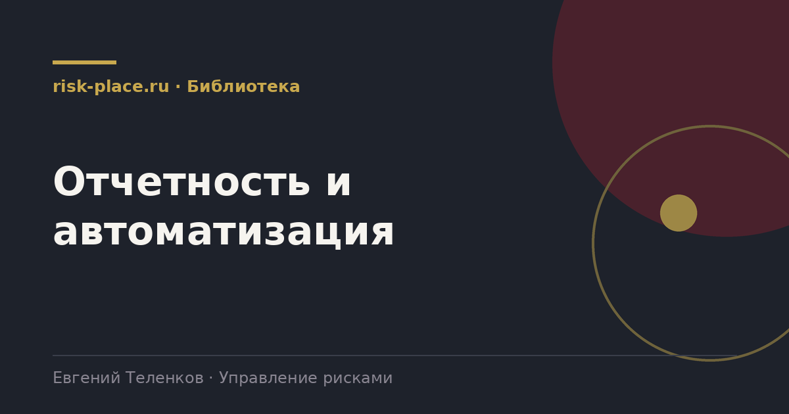

Главная · Библиотека · Отчетность и автоматизация
Раздел библиотеки
Раздел о том, как превратить накопленные данные в решения, а не в архив.

Материалы
Что показывать руководству и совету директоров, метрики качества процесса, ключевые индикаторы риска, дашборд и переход от таблиц к системе.
Что включать в отчет по рискам, как построить структуру на одну страницу, чем отличается отчет правлению от отчета совет
Читать →Что такое ключевые индикаторы риска, чем опережающий индикатор отличается от запаздывающего, как выбрать величину и зада
Читать →Как измерить качество работы самой системы управления рисками, какие показатели использовать, как отличить показатели пр
Читать →Как задать риск-аппетит компании, чем он отличается от толерантности, как сформулировать границы по направлениям, кто ут
Читать →Как устроен дашборд по рискам, какие блоки на нем нужны, чем он отличается от отчета, какие данные необходимы для его ра
Читать →Что автоматизировать в управлении рисками и в каком порядке, какие функции дают эффект сразу, как подготовиться к внедре
Читать →Какие функциональные требования предъявляются к информационной системе управления рисками, что должно быть обязательно,
Читать →Когда таблицы для ведения рисков перестают справляться, какие признаки указывают на необходимость перехода, что можно вы
Читать →Почему картина рисков на дату малоинформативна, как хранить историю оценок, какие способы показа динамики работают и как
Читать →Другие разделы
Базовый раздел библиотеки. Здесь собрано то, без чего не работает ничего остальное, определение риска, устройство процес
Раздел →Рабочая база системы, из которой растет отчетность и решения комитета.
Раздел →Как отделить риски, требующие решения руководства, от тех, за которыми достаточно наблюдать.
Раздел →На какие документы опирается система управления рисками в российской компании.
Раздел →Раздел о том, как превратить контроль из формального документа в работающий механизм внутри процессов.
Раздел →Раздел о правилах, за нарушение которых компания платит не репутацией, а деньгами.
Раздел →Одна форма для любого вопроса
Расскажем о ближайших датах, предложим формат под ваш состав участников и назовем порядок бюджета.
Предпочитаете почту — напишите на info@risk-place.ru. Адрес: Москва, улица Скаковая, 32с2.
 risk-
risk-